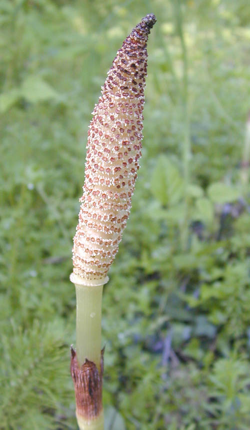

Equisetaceae
horsetail family
 Equisetum arvense (field horsetail) from Wikimedia Commons by H. Zell - Own work, CC BY-SA 3.0 |
 Equisetum braunii (northern giant horsetail) from Wikimedia Commons by Marshman at English Wikipedia / Eric Guinther, CC BY-SA 3.0 |
{kind=link}
botanical characteristics
Botany in a Day, p. 41 | "Equisetum", Wikipedia
- growth form
- two types of stalks produced in some species: a fertile 'jointgrass' and a sterile 'horsetail'
- stems/leaves
- leaves are greatly reduced and usually non-photosynthetic
- arranged in whorls fused into nodal sheaths
- stems are usually green and photosynthetic, and are distinctive in being hollow, jointed and ridged (with sometimes 3 but usually 6–40 ridges)
- may or may not be whorls of branches at the nodes; unusually, the branches often emerge below the leaves in an internode, and grow from buds between their bases
- reproductive structures
- cone-like structure at the top of the fertile stalks covered with spore-producing scales
- spores are carried by the wind, land on the ground, cross-fertilize, then form new plants
distribution
"Equisetum", Wikipedia
- one genus Equisetum and 18 recognized species
- concentrated in the non-tropical northern hemisphere and is near-cosmopolitan, being absent naturally only from Antarctica, Australia, New Zealand, and the islands of the Pacific Ocean
- most common in northern Europe, with 10 species
- Northern North America (Canada and the northernmost United States) has 9 species
- only 5 of the 18 species are known to be native south of the Equator
ecological roles
"Equisetum", Wikipedia
- field horsetail (E. arvense) can be a nuisance weed, readily regrowing from the rhizome after being pulled out and unaffected by many herbicides designed to kill seed plants
- since the stems have a waxy coat, the plant is resistant to contact weedkillers like glyphosate
- members of the genus have been declared noxious weeds in Australia and in the US state of Oregon
- all the Equisetum are classed as 'unwanted organisms' in New Zealand and are listed on the National Pest Plant Accord
common pharmacological constituents
The New Age Herbalist, p. 57 | "Equisetum", Wikipedia
- silica, saponins (incl. equisetonin), traces of alkaloids, flavonoids, minerals (incl. manganese, potassium, sulphur, magnesium), tannin, thiaminase
patterns in medicinal actions
- abundant silica and other minerals support the nails, hair, teeth (the external/'inorganic' parts of the body)
- mildly diuretic and astringent
- helps stop internal and external bleeding
- encourages remineralization/replacing the body with crystal/quartz
traditional/cultural uses
- people have regularly consumed horsetails
- the fertile stems bearing strobili of some species can be cooked and eaten like asparagus
- indigenous nations across Cascadia consume and use horsetails in a variety of ways
- extracts and other preparations of E. arvense have served as herbal remedies, with records dating over centuries
warnings
Botany in a Day, p. 41 | "Equisetum", Wikipedia
- Equisetum species pull in chemicals and heavy metals from polluted soil; must be careful when wildcrafting and sourcing
- thiaminase metabolizes vitamin B12 (thiamin); extended use of horsetail may lead to thiamin deficiency
- can be poisonous to grazing animals, including horses
- cooking renders it safe
- silica content can irritate the urinary tract and kidneys with extended use
extra information
prominent genera
- Equisetum
plant highlights
see list of materia medica entries here
sources
Elpel, Thomas J. Botany in a Day: The Patterns Method of Plant Identification (2021)
"Equisetum" on Wikipedia. Retrieved 20 August 2025.
Goldberg Blackthorn, Samantha. Ace of Cups Herbal Medicine and Botanical Magic Herbal School (2024)
Mabey, Richard et al. The New Age Herbalist (1988)